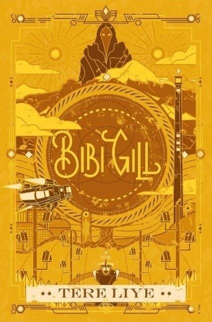

| Home | Best Seller |
|  | Judul Buku : Bibi Gill Penulis : Tere Liye Tanggal Terbit : 4 Maret 2022 Jumlah Halaman : 356 halaman Penerbit : Gramedia Pustaka Utama Harga : Rp95.000 |
Review Novel Bibi Gill |
| Apakah kamu ingat karakter Bibi Gill muncul di serial novel mana saja? Untuk review novel Bibi Gill kita memang perlu flashback,
karakter Bibi Gill ini muncul untuk pertama kalinya dalam buku Selena, salah satu dosen ABTT terbaik yang mengajar mata kuliah Malam dan
Misterinya dan juga mengajar di Selena. Terus muncul di buku Si Putih, lebih tepatnya muncul hanya seperti cameo jika dalam istilah film. Saat N-ou, Si Putih dan Pak Tua memulai perjalanan, saat itulah mereka bertemu Bibi Gill di ruang makan. Bibi Gill muncul beberapa kali dalam buku Selena. Di sana, Selena mengikuti jejak Bibi Gill untuk menjadi seorang pengintai. Setelah dinobatkan satu-satunya siswa Bibi Gill dalam mata kuliah “Malam dan Misteri”. Jadi cerita ini jauh sebelum trio petualang ada, Selena ada ketika Klan Bulan masih primitif. Dalam buku ini, ceritakan kisah karakter Bibi Gill yang memiliki kepribadian ganda. Bibi Gill memiliki gen kutukan yang tentu membuatnya mampu mengendalikan kebahagiaan. Karena jika terlalu bahagia, kesedihan akan datang kepadanya. Kemudian Bibi Gill berpetualang dengan Si Putih dan Kakek Tua. Petualangan itu hanya untuk menghilangkan kutukan pada dirinya dan membalas kebahagiaan hidupnya masih hilang. Kelebihan dari buku ini adalah kisah Tere Liye yang selalu terselip ilmu pengetahuan dan salah satu hal yang baru dan unik, Tere Liye menggambarkan karakter Bibi Gill yang memiliki dua kepribadian. Oleh karena itu, pembaca menjadi lebih belajar tentang perbedaan antara ego dan beberapa kepribadian. Dari novel ini, dapat diambil pembelajaran bahwa menjadi manusia harus mampu mengendalikan diri karena pada dasarnya, setiap orang harus memiliki dua sisi dalam dirinya. Hanya saja, pada saat yang sama, baik dan sisi buruk dapat dikontrol dan dipilih oleh masing-masing dari kita yang ingin menjadi dominan. Dari kisah Bibi Gill ini memiliki pandangan rasa bersyukur, kita dapat memahami kehendak, kelemahan, kelebihan, bahkan hal-hal lain. Selain itu menyadari untuk tidak mudah menjustifikasi orang lain atau mencari kesalahan orang lain. Mengenali diri sendiri memang menjadi fase sulit bagi setiap orang. Tapi jika sudah berhasil, kita bisa mensyukuri hidup untuk dijalani. Jadi jangan pernah menyerah, terutama untuk mengenal diri sendiri. |